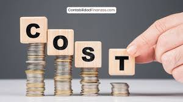

¿Qué es la Contabilidad de Costos?
La contabilidad de costos es un sistema de información con el que se establece el costo incurrido al realizar un producto y la forma como fue generado, para cada una de las actividades en las que se desarrolla el proceso productivo.
DEFINICIÓN DE COSTOS
Los costos representan erogaciones y cargos asociados clara y directamente con la adquisición o la producción de los bienes o la prestación de los servicios, de los cuales un ente económico obtendrá sus ingresos.
CONTABILIDAD DE COSTOS EXPLICACIÓN
Permite conocer exactamente cuál es el costo de los productos fabricados y a qué corresponde cada uno.
Imagina una panadería donde producir una barra de pan cuesta 1 dólar. La contabilidad de costos le permite saber los costos que contribuyen al total unitario. Por ejemplo:
- Costo de la harina: 0,30 dólares.
- Mano de obra: 0,35 dólares.
- Costo de la maquinaria: 0,20 dólares.
- Costo del horno y la electricidad: 0,10 dólares.
- Costo de otras materias primas: 0,05 dólares.
De esta manera permite saber de dónde proceden los mayores costos, y así poder investigar en detalle uno a uno, para tratar de encontrar formas de hacer más eficiente la gestión de la empresa.
OBJETIVOS
Determinar el costo de producción por unidad de producto o servicio.
Analizar y controlar los costos para mejorar la eficiencia y rentabilidad.
Proporcionar información útil para la toma de decisiones gerenciales, como la fijación de precios, la evaluación de la rentabilidad de productos o servicios, y la identificación de áreas de mejora.

TIPOS DE COSTOS
Costos directos: Se pueden atribuir directamente a un producto o servicio (ej: materias primas, mano de obra directa).
Costos indirectos: No se pueden atribuir directamente a un producto o servicio, sino que se asignan a través de una fórmula (ej: alquileres, servicios públicos).
¿POR QUÉ ES IMPORTANTE?
La contabilidad de costos ofrece a la empresa toda la información que necesita para tomar decisiones oportunas y correctas en base a información real y concreta sobre sus costos de producción. Dicha información es útil para desarrollar nuevos proyectos y evaluar las actividades realizadas dentro de la empresa, así como para tener mayor control sobre la fabricación, venta y financiación de los productos.
Por otro lado, la contabilidad suele brindar datos útiles a los directivos de una empresa para entender la situación económica de la organización y así diseñar objetivos rentables a corto plazo. Para saber con exactitud el precio de un producto o servicio ofrecido, se requiere del conocimiento exacto de sus costos de base, pues de otro modo se corre el riesgo de resultar ineficiente y atentar contra el capital de la empresa.